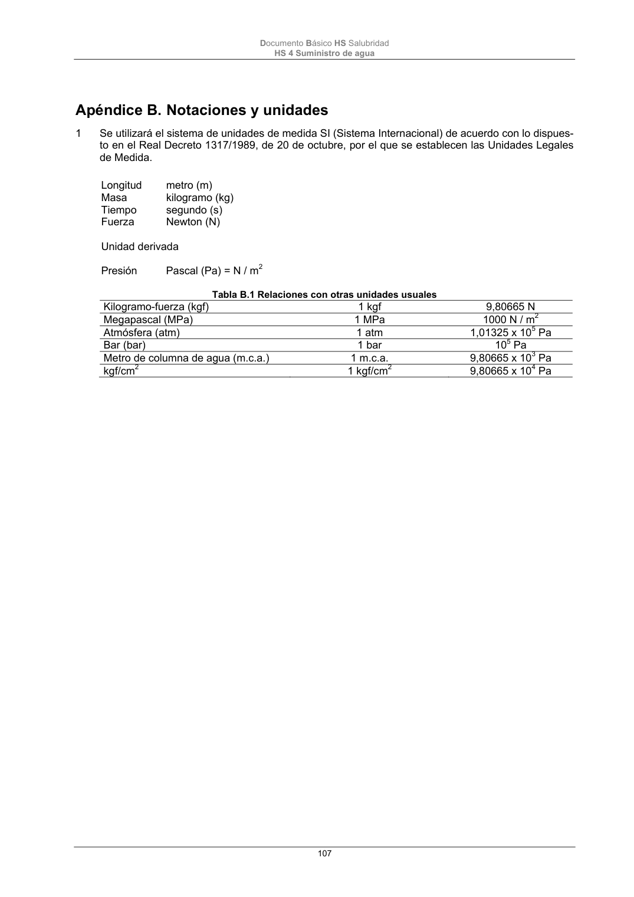

DB-HS · Apéndice A. Terminología · versión 2022-06-14 · capa oficial
Formatos: JSON compacto · Markdown · PDF fuente
Ámbito del documento · texto del ámbito · documento y tablas
ID técnico a0246 · PDF pág. 105-107 · jerarquía no validada por persona · contrastado con el literal de la página 105 (candidato tipográfico); no validado por persona · padre: raíz
Apéndice A. Terminología Acometida: tubería que enlaza la instalación general del edificio con la red exterior de suministro. Ascendentes (o montantes): Tuberías verticales que enlazan el distribuidor principal con las instalacio- nes interiores particulares o derivaciones colectivas. Caudal instantáneo: volumen de agua suministrado por unidad de tiempo. Caudal instantáneo mínimo: caudal instantáneo que debe recibir los aparatos sanitarios con indepen- dencia del estado de funcionamiento. Caudal simultáneo: caudal que se produce por el funcionamiento lógico simultáneo de aparatos de consumo o unidades de suministro. Contadores divisionarios: aparatos que miden los consumos particulares de cada abonado y el de cada servicio que así lo requiera en el edificio. En general se instalarán sobre las baterías. Contador general: aparato que mide la totalidad de los consumos producidos en el edificio. Depósito de acumulación: depósito que servirá básicamente, en los grupos de presión, para la succión de agua por las electrobombas correspondientes sin hacerlo directamente desde la red exterior; de re- serva cuando el suministro habitual sea discontinuo o insuficiente. Derivación de aparato: tubería que enlaza la derivación particular o una de sus ramificaciones con un aparato de consumo. Derivación particular: tubería que enlaza el montante con las derivaciones de aparato, directamente o a través de una ramificación. Diámetro nominal: número convencional que sirve de referencia y forma parte de la identificación de los diversos elementos que se acoplan entre sí en una instalación, pudiéndose referir al diámetro interior o al diámetro exterior. Vienen especificados en las normas UNE correspondientes a cada tipo de tubería. Distribuidor principal: Tubería que enlaza los sistemas de control de la presión y las ascendentes o derivaciones. Espesor nominal: número convencional que se aproxima al espesor del tubo. Fluxor: elemento de descarga que dispone de cierre automático y que al ser accionado permite el paso de un gran caudal durante el tiempo que permanezca accionado. Fluxor: llave, temporizada, de cierre automático que al ser abierta es capaz de proporcionar un caudal de agua abundante en un breve periodo de tiempo, empleada generalmente para sustituir el depósito de descarga en los inodoros y otros aparatos empleados en servicios de uso público. Grupo de sobreelevación: equipo que permite disponer de una presión mayor que la que proporciona la red de distribución. Instalación general: conjunto de tuberías y elementos de control y regulación que enlazan la acometida con las instalaciones interiores particulares y las derivaciones colectivas. Instalación interior particular: parte de la instalación comprendida entre cada contador y los aparatos de consumo del abonado correspondiente. Red de tuberías, llaves y dispositivos que discurren por el interior de la propiedad particular, desde la llave de paso hasta los correspondientes puntos de consumo. Estará compuesta de: - llave de paso: que permitirá el corte del suministro a toda ella - derivaciones particulares: tramo de canalización comprendido entre la llave de paso y los rama- les de enlace Documento Básico HS Salubridad HS 4 Suministro de agua 106 - ramales de enlace: tramos que conectan la derivación particular con los distintos puntos de con- sumo. - puntos de consumo: todo aparato o equipo individual o colectivo que requiera suministro de agua fría para su utilización directa o para su posterior conversión en ACS. Local húmedo: local en el que existen aparatos que consumen agua, alimentados por las derivaciones de aparato de la instalación interior particular. Llave de paso: llave colocada en el tubo de alimentación que pueda cortarse el paso del agua hacia el resto de la instalación interior. Llave de registro: llave colocada al final de la acometida para que pueda cerrarse el paso del agua ha- cia la instalación interior. Pasamuros: orificio que se practica en el muro de un cerramiento del edificio para el paso de una tube- ría, de modo que ésta quede suelta y permita la libre dilatación. Presión de prueba: presión manométrica a la que se somete la instalación durante la prueba de estan- queidad. Presión de servicio: presión manométrica del suministro de agua a la instalación en régimen estaciona- rio. Presión de trabajo: valor de la presión manométrica interna máxima para la que se ha diseñado el tubo, considerando un uso continuado de 50 años. Presión nominal: número convencional que coincide con la presión máxima de trabajo a 20 ºC. Prueba de resistencia mecánica y estanqueidad: prueba que consiste en someter a presión una red de tuberías con el fin de detectar roturas en la instalación y falta de estanqueidad. Purgado: consiste en eliminar o evacuar el aire de las tuberías de la instalación. Tubo de alimentación: Tubería que enlaza la llave de corte general y los sistemas de control y regula- ción de la presión o el distribuidor principal. Válvula de retención: dispositivo que impide automáticamente el paso de un fluido en sentido contrario al normal funcionamiento de la misma. Válvula de seguridad: dispositivo que se abre automáticamente cuando la presión del circuito sube por encima del valor de tarado, descargando el exceso de presión a la atmósfera. Su escape será recondu- cido a desagüe. Documento Básico HS Salubridad HS 4 Suministro de agua 107

PDF fuente redistribuible: copia fiel enlazada en esta página (SHA256 verificado).